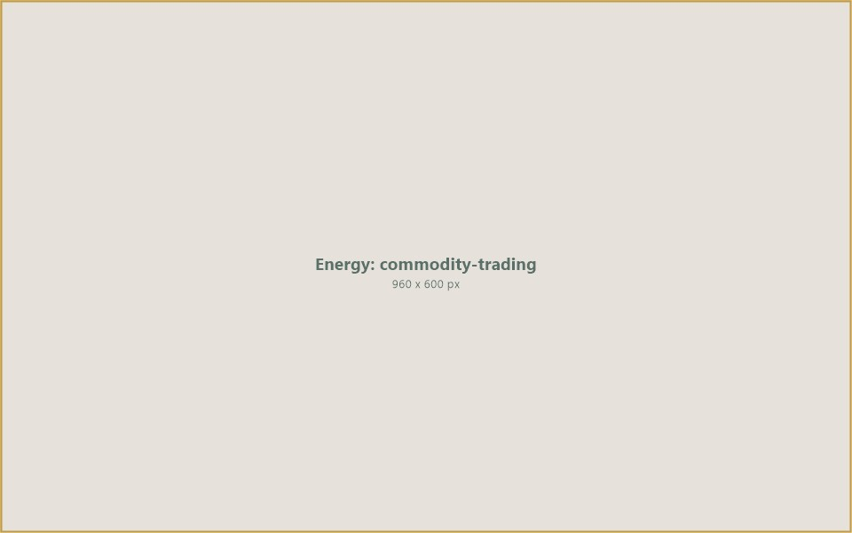
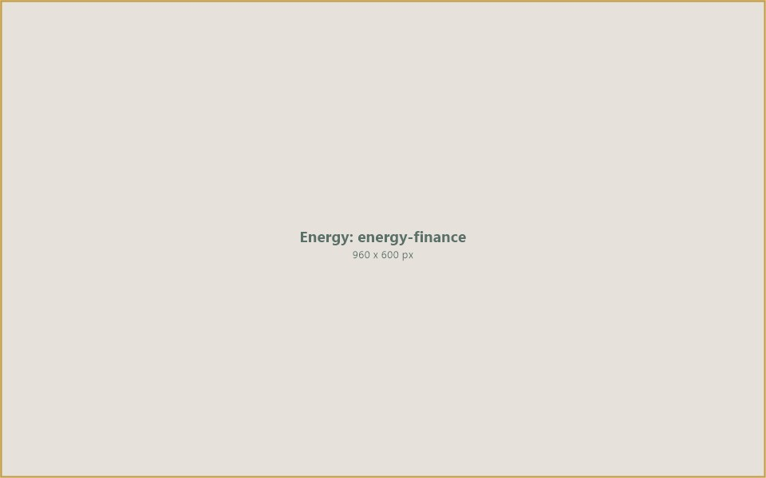
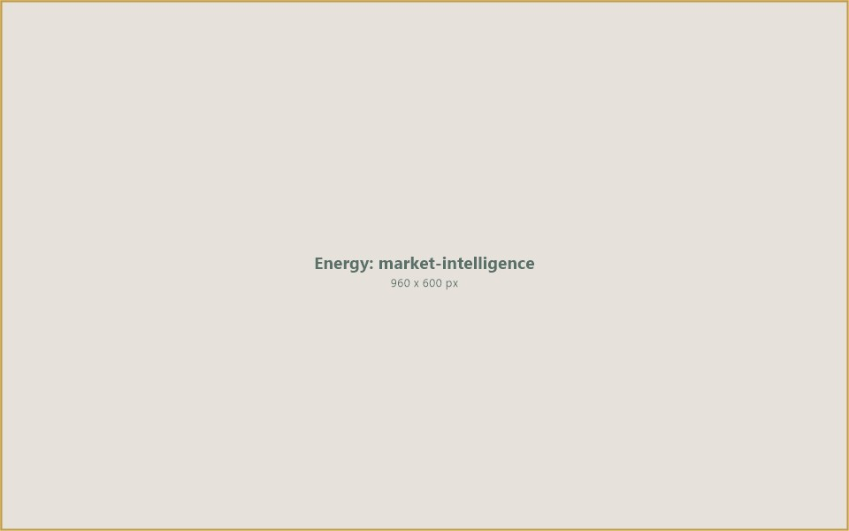

A trading and finance platform for energy commodities — connecting producers, traders, and buyers across oil, gas, renewable energy, and power markets with the financial infrastructure to close deals.
Energy markets are among the largest and most complex commodity markets in the world. Yet significant barriers remain — from access to trading counterparts and financing gaps to price volatility and regulatory fragmentation across jurisdictions. These barriers prevent many legitimate producers, refiners, and buyers from participating fully in global energy trade.
IIC Worldwide operates as a commodity trading and finance platform for energy markets. We open access for producers, traders, refiners, and end-buyers to participate in structured, verified energy transactions — whether in crude oil, refined petroleum, natural gas, LNG, renewable energy certificates, or carbon credits.
Our platform bridges the gap between energy supply and demand by providing the trading infrastructure, counterparty verification, and financial solutions that the market requires. We serve as the connective layer between those who produce energy and those who need it.
From upstream producers seeking market access to downstream buyers requiring reliable supply, IIC provides the platform, finance, and trust framework that makes energy trade work.
IIC connects the full energy commodity value chain — from upstream production and midstream infrastructure to trade finance and market intelligence — through a single, structured platform.

Energy Commodity Trading960 x 600 pxIIC facilitates the buying and selling of energy commodities across global markets. Our platform connects verified producers of crude oil, refined petroleum products, natural gas, and renewable energy with qualified buyers and traders. Every transaction is structured with clear terms, pricing benchmarks, and contractual protections. We handle spot trades, term contracts, and structured deals — providing market participants with the flexibility and reliability they need to operate in volatile energy markets. Our verification process ensures that only legitimate, compliant counterparts participate.
Energy commodities require physical infrastructure to move from production sites to end-users. IIC coordinates access to storage terminals, pipeline networks, port facilities, and transportation logistics that underpin energy trade. Our platform connects trading participants with infrastructure operators, enabling efficient scheduling, storage allocation, and delivery coordination. Whether managing tank storage for petroleum products, coordinating LNG vessel logistics, or arranging pipeline nominations, we ensure that the physical supply chain supports every commercial transaction on our platform.

Energy Finance960 x 600 pxEnergy transactions are capital-intensive, and access to trade finance is often the determining factor in whether a deal proceeds. IIC provides structured financing solutions tailored to energy commodity trade — including pre-export finance, inventory financing, letters of credit, and performance guarantees. Our financial products are designed to bridge the gap between production and payment, enabling producers to access capital against confirmed orders and buyers to secure supply with appropriate credit terms. We work with banking partners and institutional investors to underwrite transactions across the energy spectrum.

Market Intelligence960 x 600 pxInformed trading decisions require timely, accurate market data. IIC provides platform participants with market intelligence covering pricing trends, supply-demand dynamics, regulatory developments, and geopolitical factors affecting energy markets. Our analytics capabilities help traders and buyers understand market conditions, identify opportunities, and manage risk. From real-time pricing benchmarks and trade flow data to regional market reports and regulatory tracking, we equip participants with the intelligence they need to trade with confidence in fast-moving energy markets.
Through our group network and trading partners, we facilitate the trading of petroleum and energy products across international markets.
Ultra-low sulphur diesel conforming to EN590 specifications at 10 PPM — sourced through our trading network for international delivery to distributors and end-users.
Marine-grade gas oil for the shipping and maritime industry — meeting IMO sulphur regulations and delivered through our port and bunkering partner network.
Trading of Group I, II, and III base oils for lubricant manufacturers — connecting refineries with blending plants and industrial consumers across global markets.
Penetration-grade and polymer-modified bitumen for road construction and infrastructure projects — supplied in bulk from refinery sources to contractors and government agencies.
Trading of fuel oil, gasoline, jet fuel, naphtha, and other refined petroleum products through our group network of trading partners and supply chain infrastructure.
IIC Worldwide is building the trading and finance infrastructure that energy markets need. By connecting verified producers, traders, and buyers on a single platform — backed by structured finance and real-time market intelligence — we enable energy transactions that are transparent, bankable, and executable.
Our ambition is to become the platform of choice for energy commodity trade — where legitimate market participants find counterparts, secure financing, and execute transactions with the confidence that comes from verified identities, structured contracts, and institutional-grade infrastructure.
Connect with IIC Worldwide to explore energy trading opportunities, access trade finance, and join a verified marketplace for energy commodities.